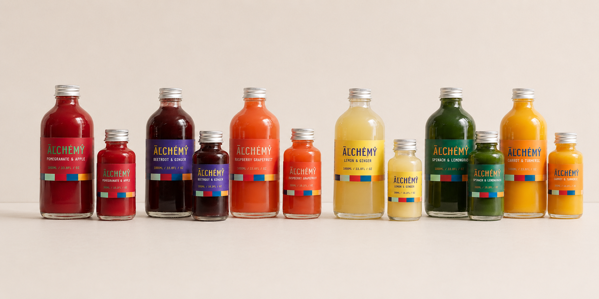
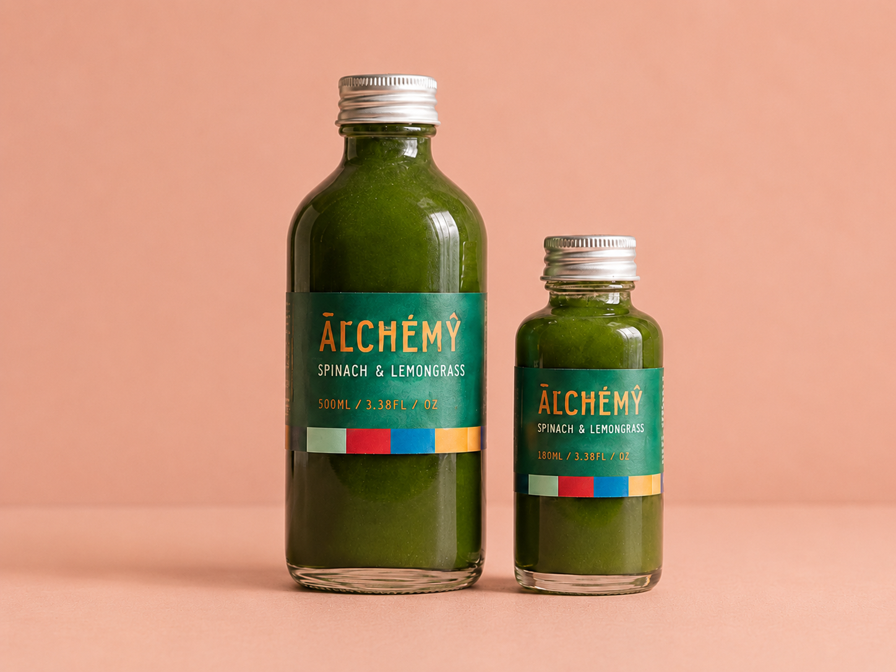
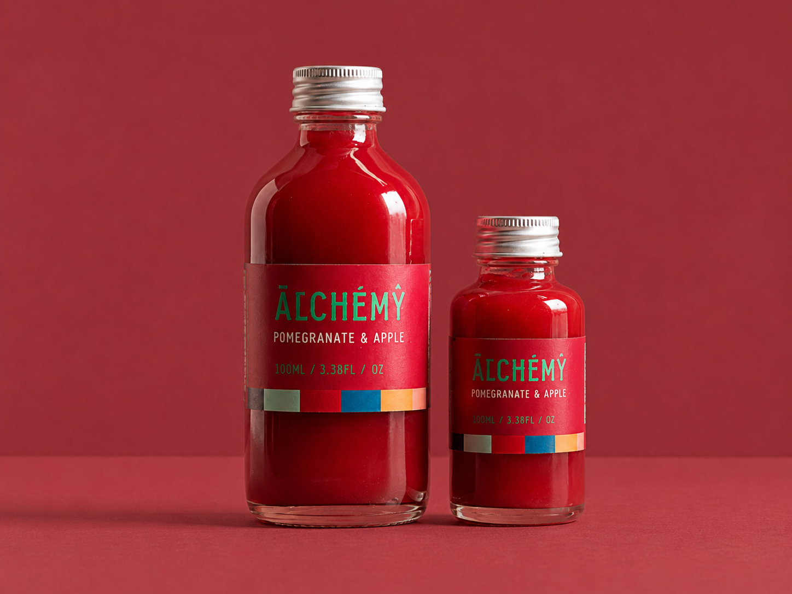
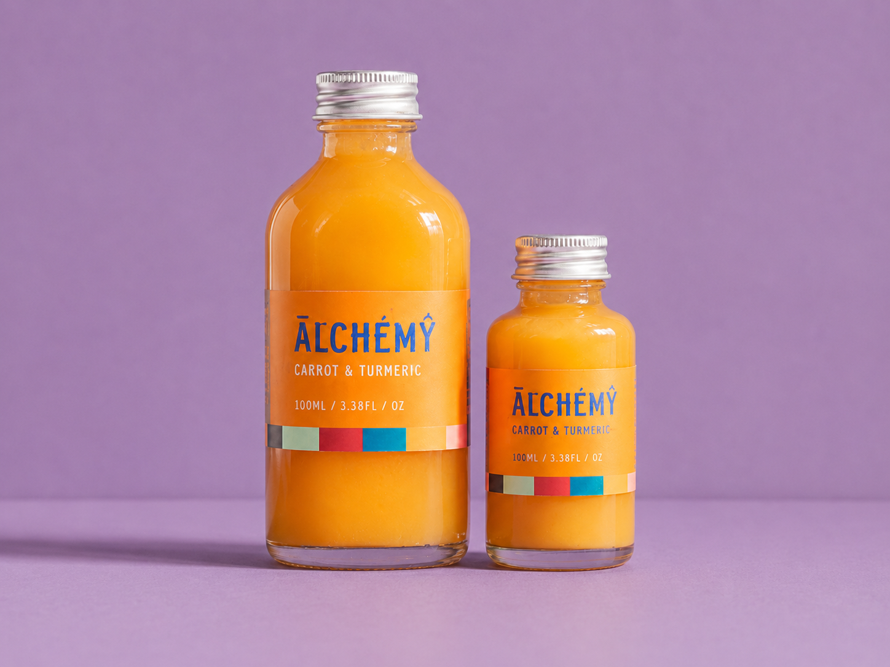
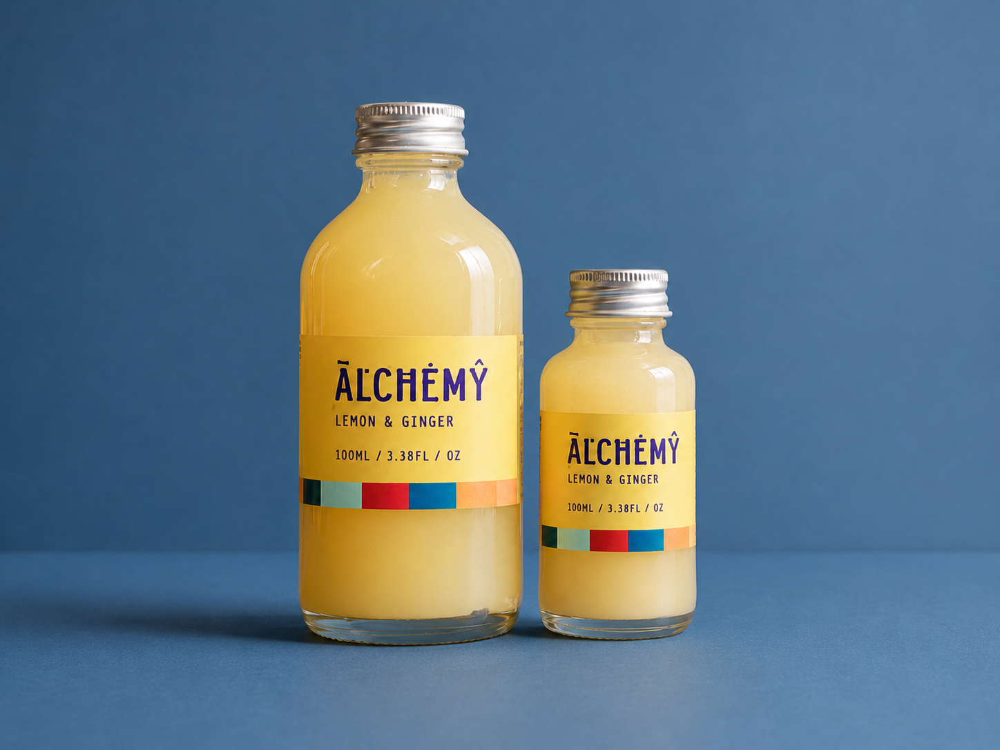
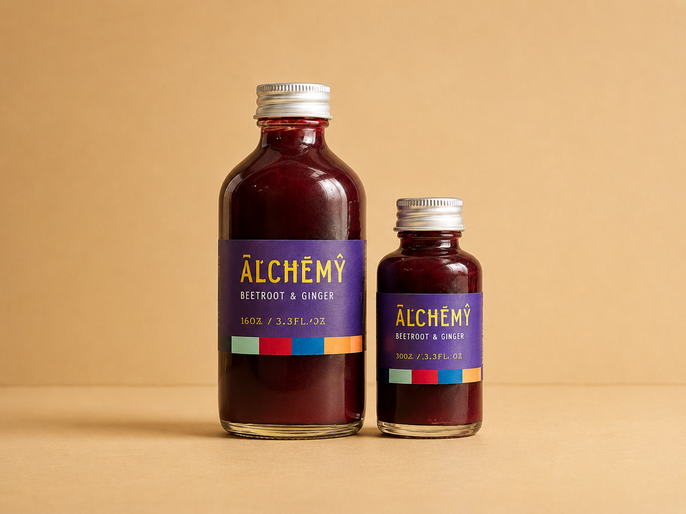
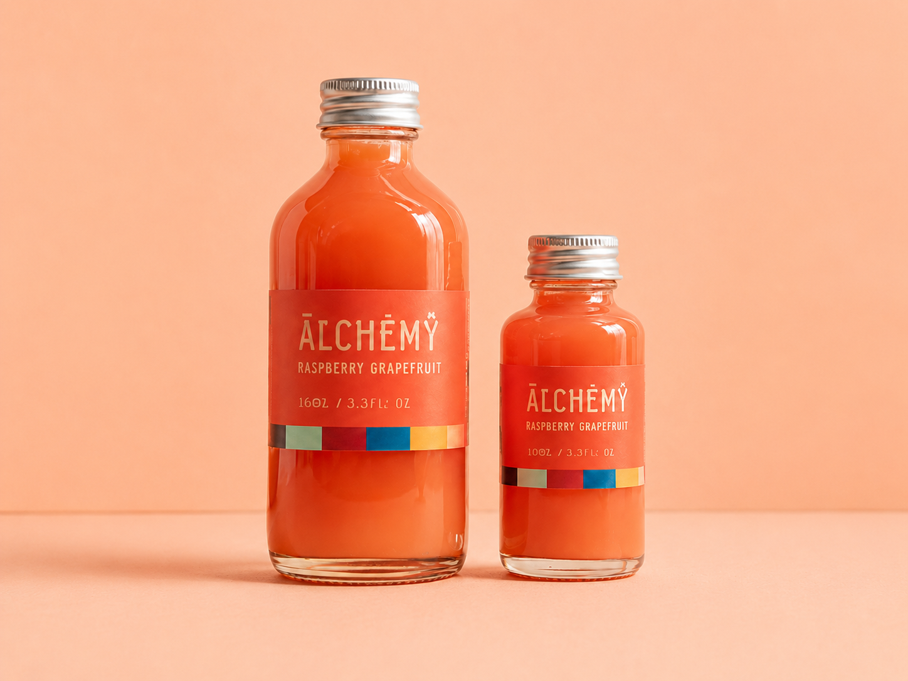

Alchemy
Alchemy reimagines health shots as bold, colourful daily rituals powered by fresh ingredients and energetic flavour pairings. The identity uses bright colour, playful typography and flavour-led packaging to position wellness as something playful and accessible rather than clinical.







- Brand Identity
- Packaging Design
- Art Direction
- Product Mockups
- Logo and label system
- Bottle packaging
- Flavour range
- Product mockups
2024
Create a health shot brand identity that feels fresh, functional and visually engaging, while clearly communicating flavour, ingredients and wellness benefits across a product range.
Transformation. Natural ingredients combined into small, powerful blends that support everyday wellbeing. Each shot becomes a concentrated mix of colour, flavour and function.
Bold, fresh and ingredient-led. Bright flavour colours, textured photographic backgrounds and natural produce styling create a visual system that feels energetic and sensory. Strong typography and colour-blocked label details keep each flavour instantly recognisable while holding the range together as one brand family.
Health-conscious consumers, busy students and professionals, and wellness-focused shoppers looking for quick daily nutrition.